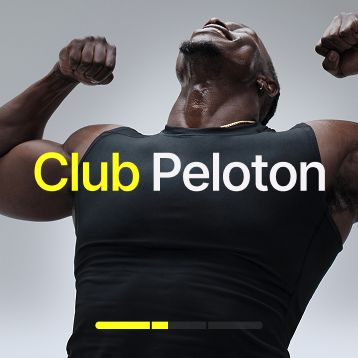
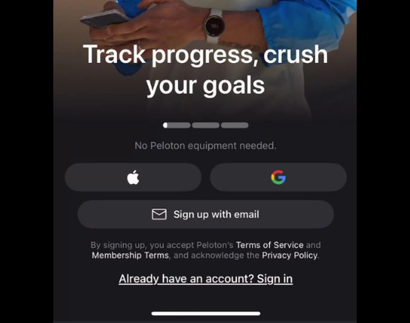
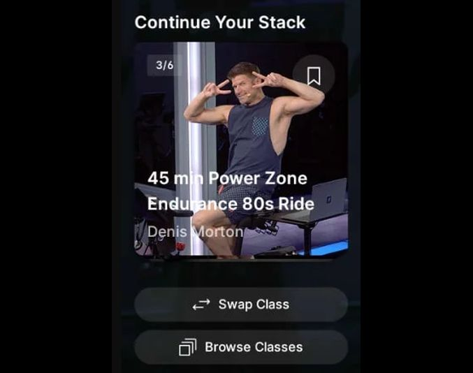

Hi, I'm Justin Lebon.
A user researcher with a background in psychology, and industry experience in habit formation, retention, and revenue growth.
Case Studies
04 studies
Club Peloton
Pre-launch and post-launch research focused on improving comprehension of Peloton's first loyalty program.
Exceeded first month adoption by 5% against a 15% benchmark
Read the study →
Dual App Sign-up
Identifying qualitative drivers behind a conversion drop revealed in an A/B test of two sign-up flows.
Diagnosed an 18% conversion drop, informing a funnel decision
Read the study →
Post Class Concepts
Live-intercept usability testing at the Peloton studio to make the post-class moment more actionable.
Increased an additional class taken by 5.8%
Read the study →Oculus Pro Usability
Evaluating a VR onboarding experience over three months using mixed methods ahead of launch.
Surfaced pain points shared across cross-functional stakeholders
Read the study →I'm a UX Researcher with 4+ years of industry experience, most recently at Peloton, following a background in psychology (B.S., Penn State). My work spans across e-commerce, software and hardware experiences. My primary research interests are habit formation, behavioral development, and the triggers that convert purchase intent into purchase action.
- Unmoderated interviewsComprehension & usability
- Attitudinal surveysSatisfaction at scale
- Live-intercept testingIn-context behavior
- Think-aloud protocolsFlow & CTA clarity
- Observational usabilityTask-level friction